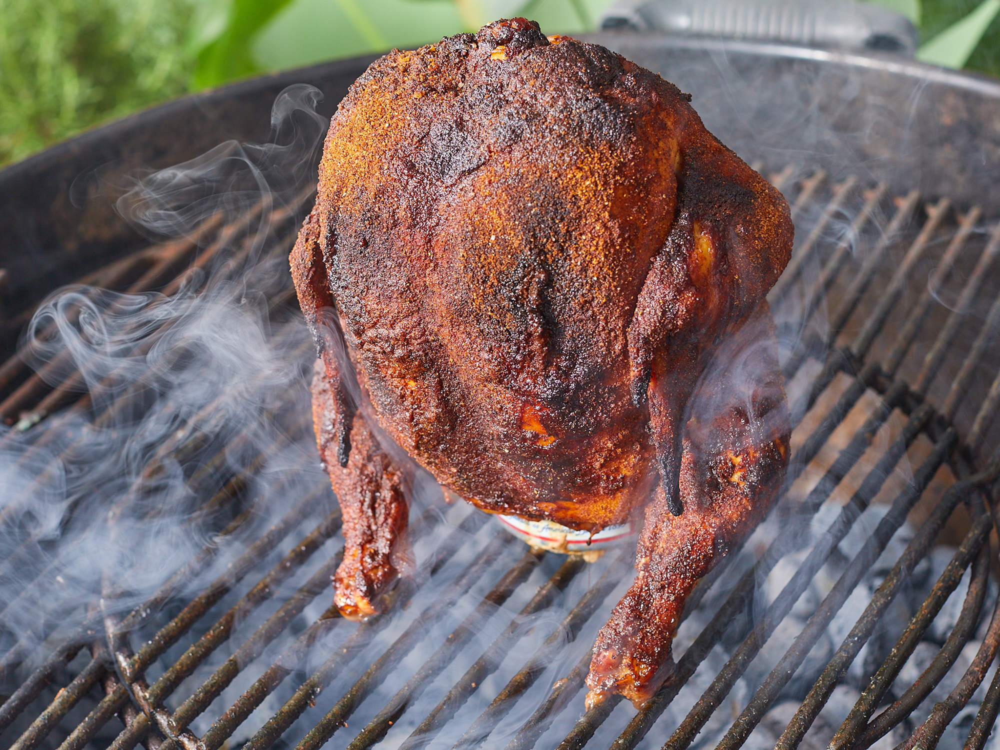

Beer Chicken

whole beer can chicken grilled.
Elevate your grilling game with our mouthwatering beer can chicken recipe. This unique cooking method results in a juicy and flavorful bird with crispy skin. Impress your guests with this show-stopping dish that combines the flavors of beer and smoky barbecue. Get ready to take your outdoor cooking to new heights!
Ingredients
- 1 whole chicken (approximately 4-5 pounds)
- 1 can of beer (12 ounces), half-full
- 2 tablespoons olive oil
- 2 tablespoons paprika
- 1 tablespoon garlic powder
- 1 tablespoon onion powder
- 1 tablespoon brown sugar
- 1 teaspoon salt
- 1 teaspoon black pepper
Steps
- Preheat your grill to medium-high heat. If using a charcoal grill, set up for indirect grilling by placing the coals on one side of the grill. If using a gas grill, light the burners on one side only.
- Remove any giblets or excess fat from the chicken cavity.
Pat the chicken dry with paper towels.
- In a small bowl, combine olive oil, paprika, garlic powder, onion powder, brown sugar, salt, and black pepper. Mix well to create a flavorful rub.
- Rub the spice mixture all over the chicken, ensuring it is evenly coated on all sides, including the cavity.
- Open the can of beer and pour out or drink about half of it.
- Create additional openings in the top of the can using a can opener or a church key bottle opener. This allows steam to escape during cooking.
- Carefully lower the chicken onto the half-full beer can, sliding it over the can until the chicken is standing upright with the can inserted into the cavity.
- Place the beer can and chicken directly on the grill grates over indirect heat, ensuring it is stable and balanced.
- Close the grill lid and cook the chicken for approximately 1.5 to 2 hours or until the internal temperature of the thickest part of the thigh reaches 165°F (74°C).
- Carefully remove the beer can from the chicken using tongs or oven mitts.
- Transfer the chicken to a cutting board and let it rest for 10-15 minutes. This allows the juices to redistribute, resulting in a juicier bird.
- Carve the beer can chicken into portions and serve hot alongside your favorite side dishes, such as grilled vegetables, cornbread, or potato salad.